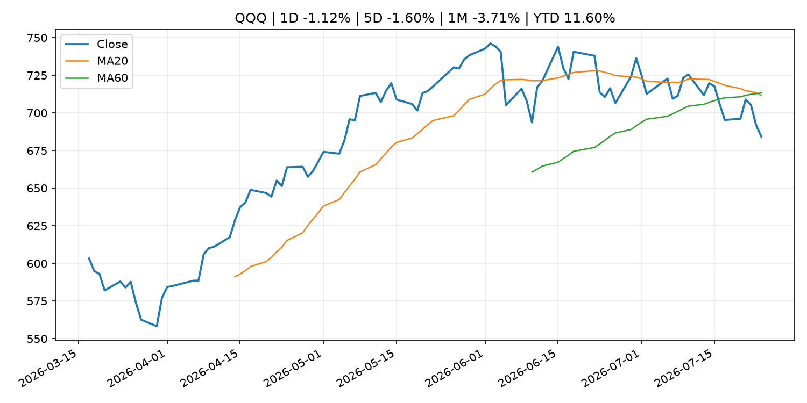
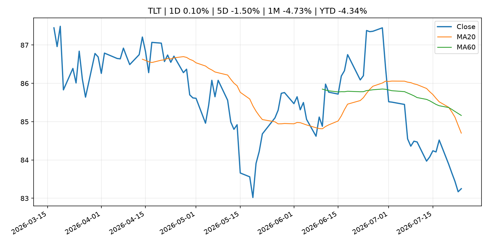
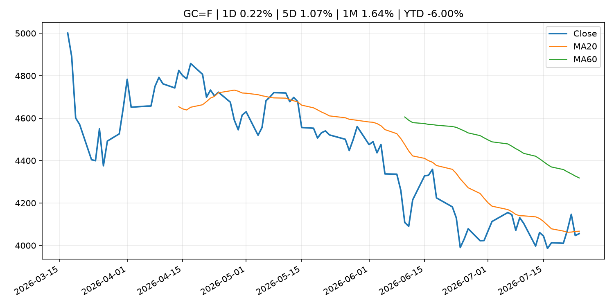
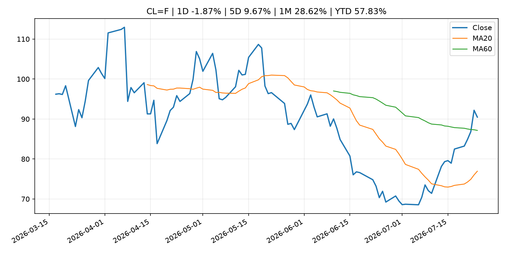
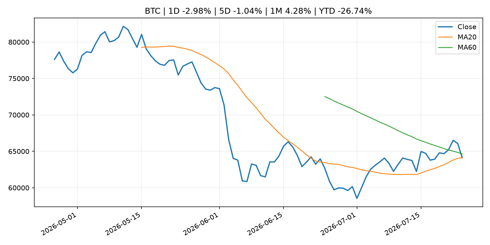
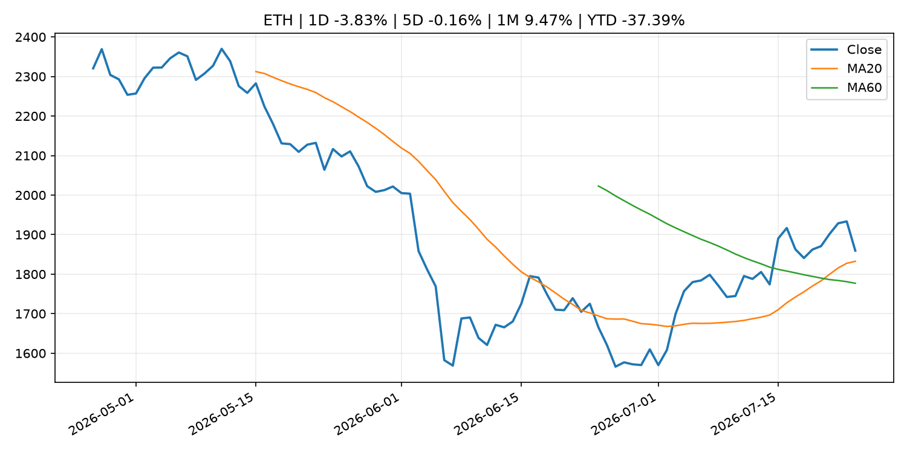
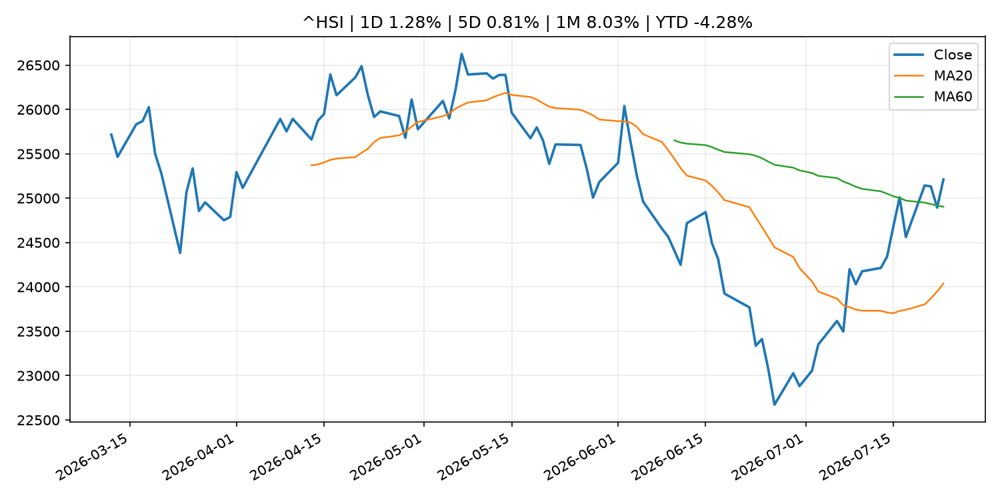

Global Macro Morning Briefing - 2026-07-25
Not financial advice / 非投资建议。
0. 今日总览
- 市场状态：unknown。市场信号不足，暂不判断明确状态。
- 今日三大主线：
- fiscal_policy: These 16 states are offering tax-free shopping days as back-to-school costs soar to over $800 per student
- central_bank_decision: Odds of Federal Reserve rate hike surge as oil prices rip higher
- fiscal_policy: EU hits Russia with massive 21st sanctions package targeting $120B crypto network
- 一句话结论：今日晨报重点关注：财政和贸易政策会影响增长、通胀、企业利润和跨境资本流。；央行决策会重定价利率、汇率、久期资产和风险资产。。跨资产方面，SPY 1D 0.10%；QQQ 1D -1.12%；^VIX 1D -0.64%；TLT 1D 0.10%；GC=F 1D 0.22%；CL=F 1D -1.87%；BTC 1D -2.98%；ETH 1D -3.83%；市场信号不足，暂不判断明确状态。政策、通胀、利率、美元、美债、能源和加密监管仍是主要观察线索。所有结论仅基于公开数据与短摘要整理，不构成投资建议。
1. 隔夜跨资产市场
- 美股：SPY 1D 0.10%，QQQ 1D -1.12%，整体趋势需结合 VIX 和利率确认。
- 美债/美元：TLT 1D 0.10%，美元指数 1D 0.03%，是判断折现率压力的核心线索。
- 黄金/原油：黄金 1D 0.22%，原油 1D -1.87%，用于观察避险、通胀和地缘风险。
- 加密：BTC 1D -2.98%，ETH 1D -3.83%，关注是否独立于纳指走出加密自身行情。
- 港股/A股：恒生 1D 1.28%，沪深300/上证 1D n/a，重点看中国政策预期与人民币线索。
- 风险观察：关注后续数据是否确认当前跨资产信号。
US_EQUITY
| symbol | latest close | 1D | 5D | 1M | YTD | trend |
|---|---|---|---|---|---|---|
| SPY | 738.93 | 0.10% | -0.59% | 0.78% | 8.16% | range_bound |
| QQQ | 684.23 | -1.12% | -1.60% | -3.71% | 11.60% | strong_downtrend |
| DIA | 518.76 | 0.48% | -0.39% | 0.05% | 7.26% | range_bound |
| IWM | 291.17 | -0.31% | -0.98% | -1.86% | 17.04% | range_bound |
| VTI | 364.80 | 0.03% | -0.60% | 0.32% | 8.47% | range_bound |
US_MACRO_MARKET
| symbol | latest close | 1D | 5D | 1M | YTD | trend |
|---|---|---|---|---|---|---|
| ^VIX | 18.58 | -0.64% | -1.01% | -0.27% | 28.05% | range_bound |
| DX-Y.NYB | 101.46 | 0.03% | 0.71% | -0.14% | 3.09% | uptrend |
| TLT | 83.25 | 0.10% | -1.50% | -4.73% | -4.34% | strong_downtrend |
| IEF | 93.03 | 0.19% | -0.86% | -1.79% | -3.17% | downtrend |
COMMODITIES
| symbol | latest close | 1D | 5D | 1M | YTD | trend |
|---|---|---|---|---|---|---|
| GC=F | 4,055.70 | 0.22% | 1.07% | 1.64% | -6.00% | downtrend |
| SI=F | 58.49 | 1.20% | 4.38% | 0.75% | -17.10% | downtrend |
| CL=F | 90.47 | -1.87% | 9.67% | 28.62% | 57.83% | range_bound |
| BZ=F | 98.38 | -2.29% | 11.67% | 33.41% | 61.94% | range_bound |
| NG=F | 2.91 | -0.27% | -0.10% | -9.72% | -19.62% | strong_downtrend |
| HG=F | 6.34 | 0.55% | 1.92% | 6.67% | 12.40% | range_bound |
HK_MARKET
| symbol | latest close | 1D | 5D | 1M | YTD | trend |
|---|---|---|---|---|---|---|
| ^HSI | 25,210.81 | 1.28% | 0.81% | 8.03% | -4.28% | range_bound |
| 0700.HK | 434.60 | -2.38% | -5.85% | 1.35% | -30.24% | downtrend |
| 9988.HK | 110.00 | -4.26% | -2.31% | 10.66% | -26.17% | range_bound |
| 3690.HK | 86.70 | -0.69% | 3.65% | 27.97% | -17.11% | range_bound |
| 1810.HK | 26.72 | -1.55% | -0.60% | 16.38% | -33.66% | range_bound |
| 1211.HK | 88.65 | 0.00% | -0.06% | 16.72% | -10.23% | range_bound |
CRYPTO
| symbol | latest close | 1D | 5D | 1M | YTD | trend |
|---|---|---|---|---|---|---|
| BTC | 64,116.23 | -2.98% | -1.04% | 4.28% | -26.74% | range_bound |
| ETH | 1,859.39 | -3.83% | -0.16% | 9.47% | -37.39% | strong_uptrend |
| SOLANA | 73.89 | -5.20% | -2.11% | -8.35% | -40.66% | range_bound |
| BINANCECOIN | 564.49 | -1.09% | -1.02% | 1.14% | -34.57% | downtrend |
| RIPPLE | 1.09 | -4.38% | -0.07% | 0.42% | -40.70% | downtrend |
2. 今日最重要的 10 条新闻
1. These 16 states are offering tax-free shopping days as back-to-school costs soar to over $800 per student
- 来源：MarketWatch Top Stories
- 时间：2026-07-24T21:21:00+00:00
- 地区：US
- 事件类型：fiscal_policy
- 重要性层级：Tier 1
- 一句话摘要：As inflation continues to squeeze household budgets, parents and students are on a mission to find back-to-school bargains.
- 为什么重要：财政和贸易政策会影响增长、通胀、企业利润和跨境资本流。
- 可能影响：主要影响 DXY，方向为 positive，强度 high；通胀压力可能推高政策利率预期并支撑美元。
- 资产：DXY 方向：positive 强度：high 原因：通胀压力可能推高政策利率预期并支撑美元。
- 资产：TLT 方向：negative 强度：high 原因：通胀上行通常推升收益率、压低长债价格。
- 资产：QQQ 方向：negative 强度：high 原因：更高利率对成长股估值折现率不利。
- 资产：SPY 方向：mixed 强度：medium 原因：名义增长可能支撑收入，但更高利率压制估值。
- 资产：GC=F 方向：mixed 强度：medium 原因：通胀对黄金是支撑，但实际利率上行会形成压力。
- 资产：BTC 方向：mixed 强度：medium 原因：抗通胀叙事和流动性收紧可能相互抵消。
- 原文链接：https://www.marketwatch.com/story/these-16-states-are-offering-tax-holidays-as-back-to-school-costs-soar-to-over-800-per-student-0ec92464?mod=mw_rss_topstories
2. Odds of Federal Reserve rate hike surge as oil prices rip higher
- 来源：CNBC Economy
- 时间：2026-07-23T20:25:28+00:00
- 地区：US
- 事件类型：central_bank_decision
- 重要性层级：Tier 1
- 一句话摘要：Investors are increasingly readying for the Federal Reserve to hike interest rates in September.
- 为什么重要：央行决策会重定价利率、汇率、久期资产和风险资产。
- 可能影响：主要影响 QQQ，方向为 negative，强度 high；鹰派政策提高折现率，压制成长股估值。
- 资产：QQQ 方向：negative 强度：high 原因：鹰派政策提高折现率，压制成长股估值。
- 资产：SPY 方向：negative 强度：medium 原因：更紧政策通常削弱风险偏好。
- 资产：TLT 方向：negative 强度：high 原因：利率上行通常压低长债价格。
- 资产：DXY 方向：positive 强度：high 原因：更高利率预期通常支撑美元。
- 资产：BTC 方向：negative 强度：high 原因：流动性收紧通常压制高 beta 加密资产。
- 资产：CL=F 方向：positive 强度：high 原因：供给扰动或 OPEC 减产通常推升 WTI 原油。
- 原文链接：https://www.cnbc.com/2026/07/23/fed-interest-rate-odds-oil-jobless-claims.html
3. EU hits Russia with massive 21st sanctions package targeting $120B crypto network
- 来源：CoinDesk
- 时间：2026-07-24T11:58:06+00:00
- 地区：global
- 事件类型：fiscal_policy
- 重要性层级：Tier 1
- 一句话摘要：EU hits Russia with massive 21st sanctions package targeting $120B crypto network
- 为什么重要：财政和贸易政策会影响增长、通胀、企业利润和跨境资本流。
- 可能影响：可能影响利率、汇率、风险资产或大宗商品预期，但当前公开信息不足以判断明确方向。
- 资产：暂无明确资产映射
- 方向：unknown
- 强度：low
- 原因：公开信息不足以判断方向。
- 原文链接：https://www.coindesk.com/policy/2026/07/24/eu-hits-russia-with-massive-21st-sanctions-package-targeting-usd120b-crypto-network
4. SEC Announces Roundtable on Preparations for 24-Hour Trading
- 来源：SEC Press Releases
- 时间：2026-07-23T11:04:00-04:00
- 地区：US
- 事件类型：regulation
- 重要性层级：Tier 2
- 一句话摘要：The Securities and Exchange Commission announced today that it will host a roundtable on Sept. 17, 2026, to discuss moving towards 24-hour trading in the U.S. equity markets, including preparations to support overnight trading, operations and resiliency…
- 为什么重要：监管变化会改变行业盈利预期和资产风险溢价。
- 可能影响：主要影响 BTC，方向为 mixed，强度 high；加密监管或 ETF 进展会改变 BTC 的资金流和风险溢价。
- 资产：BTC 方向：mixed 强度：high 原因：加密监管或 ETF 进展会改变 BTC 的资金流和风险溢价。
- 资产：ETH 方向：mixed 强度：high 原因：监管框架会影响 ETH 产品化和机构参与度。
- 资产：COIN 方向：mixed 强度：medium 原因：监管清晰度和执法风险会影响交易平台估值。
- 资产：crypto market 方向：mixed 强度：high 原因：信息影响整个加密市场结构，但方向取决于细节。
- 原文链接：https://www.sec.gov/newsroom/press-releases/2026-69-sec-announces-roundtable-preparations-24-hour-trading
5. Tassat wants to help smaller banks tap the trillion-dollar stablecoin boom before Wall Street locks them out
- 来源：CoinDesk
- 时间：2026-07-23T18:10:02+00:00
- 地区：global
- 事件类型：crypto_market_structure
- 重要性层级：Tier 2
- 一句话摘要：Tassat wants to help smaller banks tap the trillion-dollar stablecoin boom before Wall Street locks them out
- 为什么重要：加密市场结构和监管变化会影响 BTC、ETH 及相关股票的风险溢价。
- 可能影响：主要影响 BTC，方向为 mixed，强度 high；加密监管或 ETF 进展会改变 BTC 的资金流和风险溢价。
- 资产：BTC 方向：mixed 强度：high 原因：加密监管或 ETF 进展会改变 BTC 的资金流和风险溢价。
- 资产：ETH 方向：mixed 强度：high 原因：监管框架会影响 ETH 产品化和机构参与度。
- 资产：COIN 方向：mixed 强度：medium 原因：监管清晰度和执法风险会影响交易平台估值。
- 资产：crypto market 方向：mixed 强度：high 原因：信息影响整个加密市场结构，但方向取决于细节。
- 原文链接：https://www.coindesk.com/business/2026/07/23/tassat-wants-to-help-smaller-banks-tap-the-trillion-dollar-stablecoin-boom-before-wall-street-lock-them-out
6. The SEC settles with Coinbase over its missing Gary Gensler texts
- 来源：CoinDesk
- 时间：2026-07-23T15:36:39+00:00
- 地区：global
- 事件类型：regulation
- 重要性层级：Tier 2
- 一句话摘要：The SEC settles with Coinbase over its missing Gary Gensler texts
- 为什么重要：监管变化会改变行业盈利预期和资产风险溢价。
- 可能影响：主要影响 BTC，方向为 mixed，强度 high；加密监管或 ETF 进展会改变 BTC 的资金流和风险溢价。
- 资产：BTC 方向：mixed 强度：high 原因：加密监管或 ETF 进展会改变 BTC 的资金流和风险溢价。
- 资产：ETH 方向：mixed 强度：high 原因：监管框架会影响 ETH 产品化和机构参与度。
- 资产：COIN 方向：mixed 强度：medium 原因：监管清晰度和执法风险会影响交易平台估值。
- 资产：crypto market 方向：mixed 强度：high 原因：信息影响整个加密市场结构，但方向取决于细节。
- 原文链接：https://www.coindesk.com/policy/2026/07/23/sec-agrees-to-end-lawsuit-over-missing-ethereum-records-will-pay-usd150-000-in-fees
7. Bitcoin settles near $65,000 as oil's march toward $100 fails to spook the market
- 来源：CoinDesk
- 时间：2026-07-24T11:19:38+00:00
- 地区：global
- 事件类型：other
- 重要性层级：Tier 3
- 一句话摘要：Bitcoin settles near $65,000 as oil's march toward $100 fails to spook the market
- 为什么重要：这条信息暂未匹配到重大宏观、政策或市场事件，更适合作为背景跟踪。
- 可能影响：主要影响 CL=F，方向为 positive，强度 high；供给扰动或 OPEC 减产通常推升 WTI 原油。
- 资产：CL=F 方向：positive 强度：high 原因：供给扰动或 OPEC 减产通常推升 WTI 原油。
- 资产：BZ=F 方向：positive 强度：high 原因：全球供给风险通常直接影响 Brent 原油。
- 资产：SPY 方向：mixed 强度：medium 原因：能源股可能受益，但通胀和成本压力不利于宽基风险资产。
- 原文链接：https://www.coindesk.com/markets/2026/07/24/bitcoin-settles-near-usd65-000-as-oil-s-march-toward-usd100-fails-to-spook-the-market
8. Philip R. Lane: Outlook for the euro area economy
- 来源：ECB Press Releases
- 时间：2026-07-24T17:30:00+02:00
- 地区：EU
- 事件类型：other
- 重要性层级：Tier 3
- 一句话摘要：Philip R. Lane: Outlook for the euro area economy
- 为什么重要：这条信息暂未匹配到重大宏观、政策或市场事件，更适合作为背景跟踪。
- 可能影响：更偏背景信息，短期市场影响可能有限。
- 资产：暂无明确资产映射
- 方向：unknown
- 强度：low
- 原因：公开信息不足以判断方向。
- 原文链接：https://www.ecb.europa.eu//press/key/date/2026/html/ecb.sp260724~d484b483b9.en.pdf
3. 政策与央行观察
1. These 16 states are offering tax-free shopping days as back-to-school costs soar to over $800 per student
- 来源：MarketWatch Top Stories
- 时间：2026-07-24T21:21:00+00:00
- 地区：US
- 事件类型：fiscal_policy
- 重要性层级：Tier 1
- 一句话摘要：As inflation continues to squeeze household budgets, parents and students are on a mission to find back-to-school bargains.
- 为什么重要：财政和贸易政策会影响增长、通胀、企业利润和跨境资本流。
- 可能影响：主要影响 DXY，方向为 positive，强度 high；通胀压力可能推高政策利率预期并支撑美元。
- 资产：DXY 方向：positive 强度：high 原因：通胀压力可能推高政策利率预期并支撑美元。
- 资产：TLT 方向：negative 强度：high 原因：通胀上行通常推升收益率、压低长债价格。
- 资产：QQQ 方向：negative 强度：high 原因：更高利率对成长股估值折现率不利。
- 资产：SPY 方向：mixed 强度：medium 原因：名义增长可能支撑收入，但更高利率压制估值。
- 资产：GC=F 方向：mixed 强度：medium 原因：通胀对黄金是支撑，但实际利率上行会形成压力。
- 资产：BTC 方向：mixed 强度：medium 原因：抗通胀叙事和流动性收紧可能相互抵消。
- 原文链接：https://www.marketwatch.com/story/these-16-states-are-offering-tax-holidays-as-back-to-school-costs-soar-to-over-800-per-student-0ec92464?mod=mw_rss_topstories
2. Odds of Federal Reserve rate hike surge as oil prices rip higher
- 来源：CNBC Economy
- 时间：2026-07-23T20:25:28+00:00
- 地区：US
- 事件类型：central_bank_decision
- 重要性层级：Tier 1
- 一句话摘要：Investors are increasingly readying for the Federal Reserve to hike interest rates in September.
- 为什么重要：央行决策会重定价利率、汇率、久期资产和风险资产。
- 可能影响：主要影响 QQQ，方向为 negative，强度 high；鹰派政策提高折现率，压制成长股估值。
- 资产：QQQ 方向：negative 强度：high 原因：鹰派政策提高折现率，压制成长股估值。
- 资产：SPY 方向：negative 强度：medium 原因：更紧政策通常削弱风险偏好。
- 资产：TLT 方向：negative 强度：high 原因：利率上行通常压低长债价格。
- 资产：DXY 方向：positive 强度：high 原因：更高利率预期通常支撑美元。
- 资产：BTC 方向：negative 强度：high 原因：流动性收紧通常压制高 beta 加密资产。
- 资产：CL=F 方向：positive 强度：high 原因：供给扰动或 OPEC 减产通常推升 WTI 原油。
- 原文链接：https://www.cnbc.com/2026/07/23/fed-interest-rate-odds-oil-jobless-claims.html
3. EU hits Russia with massive 21st sanctions package targeting $120B crypto network
- 来源：CoinDesk
- 时间：2026-07-24T11:58:06+00:00
- 地区：global
- 事件类型：fiscal_policy
- 重要性层级：Tier 1
- 一句话摘要：EU hits Russia with massive 21st sanctions package targeting $120B crypto network
- 为什么重要：财政和贸易政策会影响增长、通胀、企业利润和跨境资本流。
- 可能影响：可能影响利率、汇率、风险资产或大宗商品预期，但当前公开信息不足以判断明确方向。
- 资产：暂无明确资产映射
- 方向：unknown
- 强度：low
- 原因：公开信息不足以判断方向。
- 原文链接：https://www.coindesk.com/policy/2026/07/24/eu-hits-russia-with-massive-21st-sanctions-package-targeting-usd120b-crypto-network
4. SEC Announces Roundtable on Preparations for 24-Hour Trading
- 来源：SEC Press Releases
- 时间：2026-07-23T11:04:00-04:00
- 地区：US
- 事件类型：regulation
- 重要性层级：Tier 2
- 一句话摘要：The Securities and Exchange Commission announced today that it will host a roundtable on Sept. 17, 2026, to discuss moving towards 24-hour trading in the U.S. equity markets, including preparations to support overnight trading, operations and resiliency…
- 为什么重要：监管变化会改变行业盈利预期和资产风险溢价。
- 可能影响：主要影响 BTC，方向为 mixed，强度 high；加密监管或 ETF 进展会改变 BTC 的资金流和风险溢价。
- 资产：BTC 方向：mixed 强度：high 原因：加密监管或 ETF 进展会改变 BTC 的资金流和风险溢价。
- 资产：ETH 方向：mixed 强度：high 原因：监管框架会影响 ETH 产品化和机构参与度。
- 资产：COIN 方向：mixed 强度：medium 原因：监管清晰度和执法风险会影响交易平台估值。
- 资产：crypto market 方向：mixed 强度：high 原因：信息影响整个加密市场结构，但方向取决于细节。
- 原文链接：https://www.sec.gov/newsroom/press-releases/2026-69-sec-announces-roundtable-preparations-24-hour-trading
5. Tassat wants to help smaller banks tap the trillion-dollar stablecoin boom before Wall Street locks them out
- 来源：CoinDesk
- 时间：2026-07-23T18:10:02+00:00
- 地区：global
- 事件类型：crypto_market_structure
- 重要性层级：Tier 2
- 一句话摘要：Tassat wants to help smaller banks tap the trillion-dollar stablecoin boom before Wall Street locks them out
- 为什么重要：加密市场结构和监管变化会影响 BTC、ETH 及相关股票的风险溢价。
- 可能影响：主要影响 BTC，方向为 mixed，强度 high；加密监管或 ETF 进展会改变 BTC 的资金流和风险溢价。
- 资产：BTC 方向：mixed 强度：high 原因：加密监管或 ETF 进展会改变 BTC 的资金流和风险溢价。
- 资产：ETH 方向：mixed 强度：high 原因：监管框架会影响 ETH 产品化和机构参与度。
- 资产：COIN 方向：mixed 强度：medium 原因：监管清晰度和执法风险会影响交易平台估值。
- 资产：crypto market 方向：mixed 强度：high 原因：信息影响整个加密市场结构，但方向取决于细节。
- 原文链接：https://www.coindesk.com/business/2026/07/23/tassat-wants-to-help-smaller-banks-tap-the-trillion-dollar-stablecoin-boom-before-wall-street-lock-them-out
6. The SEC settles with Coinbase over its missing Gary Gensler texts
- 来源：CoinDesk
- 时间：2026-07-23T15:36:39+00:00
- 地区：global
- 事件类型：regulation
- 重要性层级：Tier 2
- 一句话摘要：The SEC settles with Coinbase over its missing Gary Gensler texts
- 为什么重要：监管变化会改变行业盈利预期和资产风险溢价。
- 可能影响：主要影响 BTC，方向为 mixed，强度 high；加密监管或 ETF 进展会改变 BTC 的资金流和风险溢价。
- 资产：BTC 方向：mixed 强度：high 原因：加密监管或 ETF 进展会改变 BTC 的资金流和风险溢价。
- 资产：ETH 方向：mixed 强度：high 原因：监管框架会影响 ETH 产品化和机构参与度。
- 资产：COIN 方向：mixed 强度：medium 原因：监管清晰度和执法风险会影响交易平台估值。
- 资产：crypto market 方向：mixed 强度：high 原因：信息影响整个加密市场结构，但方向取决于细节。
- 原文链接：https://www.coindesk.com/policy/2026/07/23/sec-agrees-to-end-lawsuit-over-missing-ethereum-records-will-pay-usd150-000-in-fees
4. 市场异动与图表
- QQQ 下跌 -1.12%
- Oil 下跌 -1.87%
- BTC 下跌 -2.98%
- ETH 下跌 -3.83%
SPY

QQQ

^VIX

TLT

GC=F

CL=F

BTC

ETH

^HSI

5. 华尔街与机构公开观点
- 暂无可靠公开观点。
6. 今日重点关注
- 经济数据：经济数据：暂无可靠公开日历数据；如配置经济日历源后可自动填充。
- 央行讲话：央行讲话：暂无可靠公开日历数据；重点跟踪 Fed、ECB、BoJ、PBOC 官网 RSS。
- 财报：财报：暂无可靠数据。
- 政策事件：政策事件：暂无可靠数据。
- 风险提醒：风险提醒：关注数据源失败项、突发地缘风险、利率和美元的二阶反应。
7. 英文金融表达与宏观概念
- inflation expectations：通胀预期，指家庭、企业或市场对未来通胀的预估。 例句：Inflation expectations can shape wage bargaining and bond yields.
- real yield：实际收益率，名义利率扣除通胀预期后的收益率。 例句：Gold often reacts more to real yields than nominal yields.
- terminal rate：终端利率，市场预期本轮加息周期的最高政策利率。 例句：A higher terminal rate can pressure growth stocks.
- risk-off：避险模式，资金偏向美元、国债、黄金等防御资产。 例句：A geopolitical shock can push markets into risk-off mode.
- supply disruption：供给扰动，通常指能源或商品供应受冲突、减产或天气影响。 例句：Supply disruption can lift oil prices and inflation expectations.
- market structure：市场结构，指交易、托管、清算、ETF、监管等制度安排。 例句：Crypto market structure rules can affect institutional participation.
8. 背景材料
- I will definitely claim Social Security early. Why do so few people talk about the elephant in the room?（MarketWatch Top Stories，other）：“The strongest argument for claiming benefits earlier goes beyond the traditional break-even analyses.”
- The stock market is completely unprepared for a 6% yield on the 30-year Treasury（MarketWatch Top Stories，other）：Long-bond spike would crush stock gains and deepen bond-fund losses.
- I am a 63-year-old semiretired physician. If I saved $2 million for retirement, should my Social Security become optional?（MarketWatch Top Stories，other）：“At that point, they arguably no longer need the government’s retirement safety net.”
- Before you ask AI to invest your life savings, you need to understand its hidden biases（MarketWatch Top Stories，other）：Bots can build a portfolio in seconds — but wait until you see where their financial advice fails.
- Philip R. Lane: Outlook for the euro area economy（ECB Press Releases，other）：Philip R. Lane: Outlook for the euro area economy
- Sam Altman-backed World Network secures $52.5 million in fresh funding to fight online AI deepfakes（CoinDesk，other）：Sam Altman-backed World Network secures $52.5 million in fresh funding to fight online AI deepfakes
- Saylor and team overhaul Strategy's bitcoin metrics as bear market persists（CoinDesk，other）：Saylor and team overhaul Strategy's bitcoin metrics as bear market persists
- Decisions taken by the Governing Council of the ECB (in addition to decisions setting interest rates)（ECB Press Releases，other）：Decisions taken by the Governing Council of the ECB (in addition to decisions setting interest rates)
- A $5 billion cluster has formed in bitcoin options. It tells a bullish story（CoinDesk，other）：A $5 billion cluster has formed in bitcoin options. It tells a bullish story
- Bitcoin settles near $65,000 as oil's march toward $100 fails to spook the market（CoinDesk，other）：Bitcoin settles near $65,000 as oil's march toward $100 fails to spook the market
- Poolin was bitcoin's biggest mining pool and now it's filing for bankruptcy（CoinDesk，other）：Poolin was bitcoin's biggest mining pool and now it's filing for bankruptcy
- Bitcoin treasury companies sell up, repay debt, pivot to AI as share prices collapse（CoinDesk，other）：Bitcoin treasury companies sell up, repay debt, pivot to AI as share prices collapse
- India orders takedown of Jack Dorsey’s bitcoin-linked messaging app Bitchat（CoinDesk，other）：India orders takedown of Jack Dorsey’s bitcoin-linked messaging app Bitchat
- ECB to extend use of climate factors in Eurosystem collateral framework to non-financial corporate credit claims（ECB Press Releases，other）：ECB to extend use of climate factors in Eurosystem collateral framework to non-financial corporate credit claims
- Results of the June 2026 survey on credit terms and conditions in euro-denominated securities financing and OTC derivatives markets (SESFOD)（ECB Press Releases，other）：Results of the June 2026 survey on credit terms and conditions in euro-denominated securities financing and OTC derivatives markets (SESFOD)
- ECB to start implementing enhanced repo facility for central banks（ECB Press Releases，other）：ECB to start implementing enhanced repo facility for central banks
- Results of the ECB Survey of Professional Forecasters for the third quarter of 2026（ECB Press Releases，other）：Results of the ECB Survey of Professional Forecasters for the third quarter of 2026
- ECB Consumer Expectations Survey results – June 2026（ECB Press Releases，other）：ECB Consumer Expectations Survey results – June 2026
- Live updates: Bitcoin gives up gains, falls below $64,000 as stocks retreat（CoinDesk，other）：Live updates: Bitcoin gives up gains, falls below $64,000 as stocks retreat
- Bitcoin holds near $65,000 as $800 billion AI selloff leaves crypto largely untouched（CoinDesk，other）：Bitcoin holds near $65,000 as $800 billion AI selloff leaves crypto largely untouched
9. 数据源、失败项与免责声明
- 采集时间：2026-07-24T23:00:16
- 数据源：公开 RSS、Yahoo Finance、CoinGecko、AKShare、FRED、SEC data.sec.gov，以及用户自有 inputs/reports 文件。
- 合规说明：不绕过 WSJ、Bloomberg、FT、Reuters 等付费墙；对付费媒体只使用公开 RSS 标题、摘要、链接和发布时间。
- 免责声明：Not financial advice / 非投资建议。本项目仅供个人学习、研究和信息整理，不构成投资建议、交易建议或任何收益承诺。
- 失败或跳过的数据源：
- crypto data failed coin=dogecoin
- China market data failed symbol=上证指数: empty dataframe
- China market data failed symbol=深证成指: empty dataframe
- China market data failed symbol=创业板指: empty dataframe
- China market data failed symbol=沪深300: empty dataframe
- China market data failed symbol=中证500: empty dataframe
- China market data failed symbol=科创50: empty dataframe
- FRED_API_KEY not set; skipping FRED macro series
- SEC failed cik=0000320193
- SEC failed cik=0000789019
- SEC failed cik=0001045810
- SEC failed cik=0001318605
- SEC failed cik=0001577552